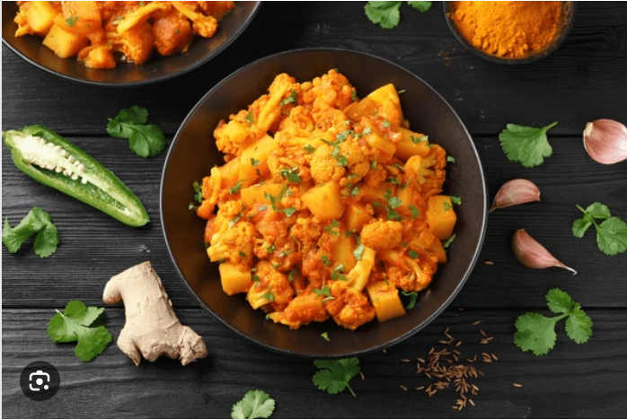

Ingredients
Potato-1 cup
Onion -1 medium-sizee(chopped)
Tomato small piece-optional
Garlic-(4-5 cloves-smashed)
Oil-2 tablespoon
Asafoetida-a pinch
Mustard seeds-1/4 tablespoon
Cumin seeds-1/4 tablespoon
Salt & Water-required
Curry leaves and coriander leaves
Procedure
Heat oil witha medium flame once hot, add mustard seeds when it splits add cumin seeds and curry leaves.
Add smashed garlic and chopped onion. Allow cooking until it turns transparent.
Add cubed potatoes,chilly powder, asafoetida and required salt then fry until it rides off the raw smell.
Once you achieved switch off the flame and garnish with coriander leaves.
That's your boiled potato fry recipe is ready to serve.